遊びで植物を育てよう
2020/03/08
挿し木の梅を植え替えしました。
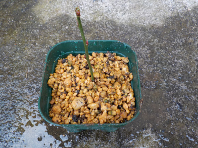
大きくなるように、ちょっと大きなプラ鉢に植え替えしました。
早く葉っぱが出て欲しいです。
【梅TOP】
【果物TOP】
【園芸TOP】
2020/02/23
挿し木の梅が咲きました。
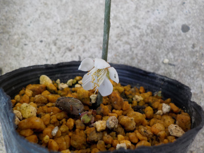
蕾が落ちずに花が咲きました。
うれしいです。
毎年咲かせたいですね。
【梅TOP】
【果物TOP】
【園芸TOP】
2020/02/15
挿し木の梅に蕾がありました。
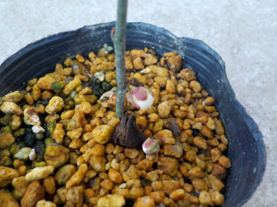
蕾が2つあったみたいで、1つは落ちていました。
元の木はずいぶん前に開花しているので、だいぶ遅いです。
残る蕾は咲くところまでいくかな？
【梅TOP】
【果物TOP】
【園芸TOP】
2019/09/28
梅の挿し木に成功しました。
1本生き残りました。
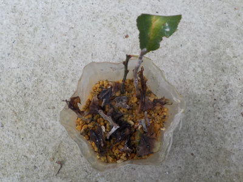
梅はペットボトルの密閉で挿し木が出来ることがわかりました。
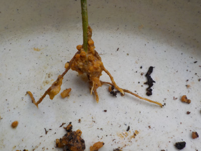
根っこもちゃんと伸びています。
花梅は挿し木できるけど、実梅は挿し木で増やせないって情報を何かで読んだことがあったので無理かと思っていたんですが、挿し木出来るんですね。
確率は低いですが、ペットボトル1本で水やりの必要なしのフリーメンテナンスなのでやる価値有です。
また春になったらやろうと思ってます。でも梅の木を植えるスペースがないかな。
【梅TOP】
【果物TOP】
【園芸TOP】
2019/06/23
ペットボトルで梅の挿し木に挑戦。
基本挿し木するものではありませんが、試にやってみました。
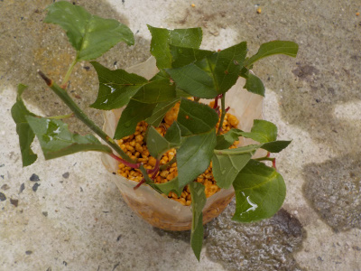
どうなるでしょうね。
【梅TOP】
【果物TOP】
【園芸TOP】
2019/01/13
梅が綺麗でした。
天気が良かったののんびり梅が見れました。
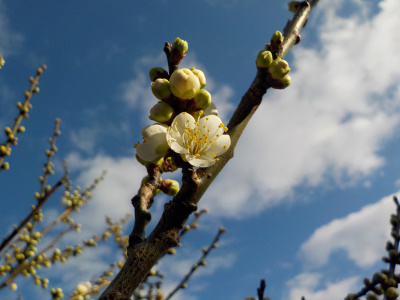
寒いとのんびり見れないですよね。
これからドンドン咲きだすかんじです。
【梅TOP】
【果物TOP】
【園芸TOP】
2018/06/24
梅の挿し木はもうしないかな。
すっかり真っ黒になりました。
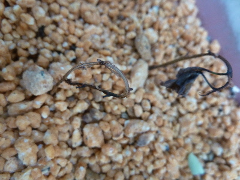
一緒に挿し木した他の木はこんな状態にはなっていません。
梅だけぶっちぎりで枯れました。
梅の挿し木は難しいんですね。もう挑戦しないかも。
【梅TOP】
【果物TOP】
【園芸TOP】
2018/06/10
梅の挿し木に挑戦
無理だろうなと思いつつやってみました。
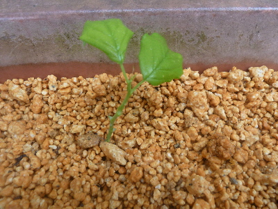
アジサイの挿し木のついでに遊んでみました。
【梅TOP】
【果物TOP】
【園芸TOP】
2018/03/18
梅の花も終わりかけです。
遅咲はまだ綺麗に咲いてますが、早くから咲いてる梅はもう終わりかけです。
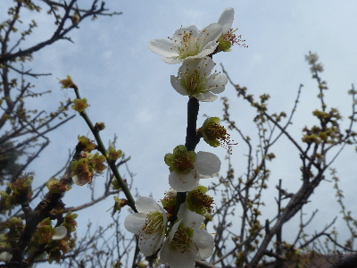
1月くらい花が楽しめましたね。
梅の木を少し増やしてもいいかな。
【梅TOP】
【果物TOP】
【園芸TOP】
2018/02/24
今年も梅が咲きました。
やっと梅が咲きました。（咲き始めです。）
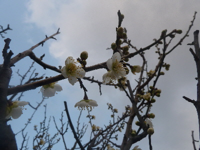
去年より半月は遅い。
暖かくなってから開花するのって、花見がしやすくていいですね。
【梅TOP】
【果物TOP】
【園芸TOP】
2017/02/05
梅が咲き出しました。
2014/03/08
紅梅も咲き出しました。
2014/02/09
今年も梅の季節です。
2013/02/03
もう梅が咲いてる。
2013/04/28
梅の実大量です。
【梅TOP】
【果物TOP】
【園芸TOP】
梅干し食べたいから育てます。
【おいしいものを食べよう。】【しっかり寝よう。】
【ソロ活をしよう!】【季節感のあることをしよう。】【動画視聴はほどほどに。】【当サイトの全てのコンテンツは無断転載禁止です。】